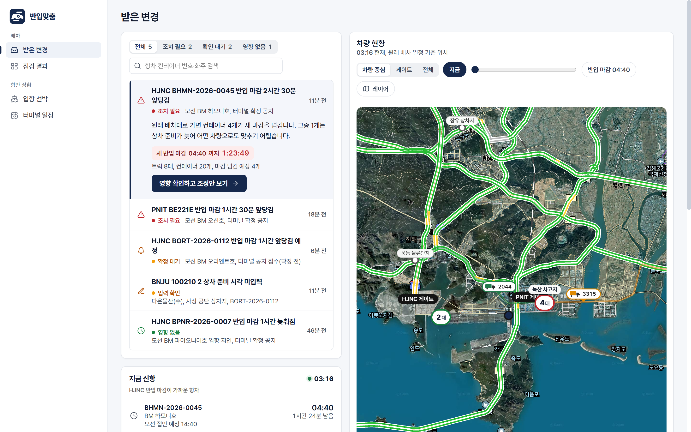
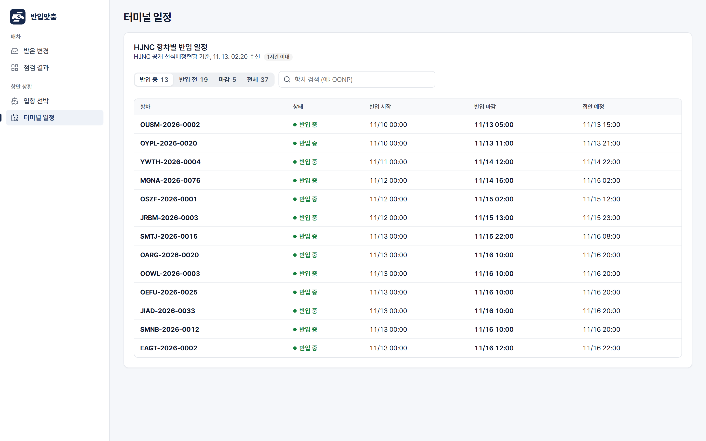
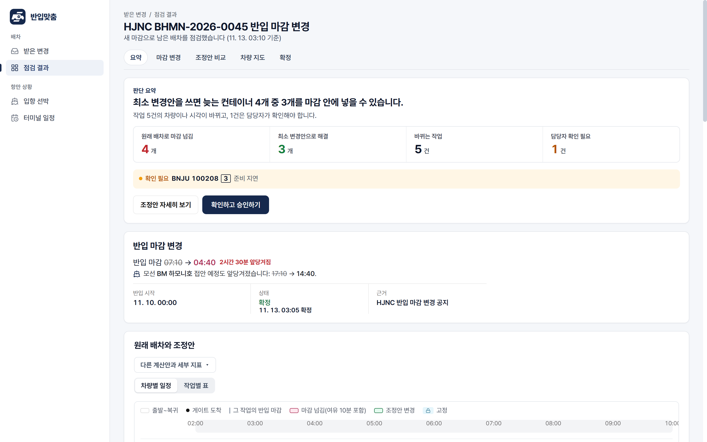
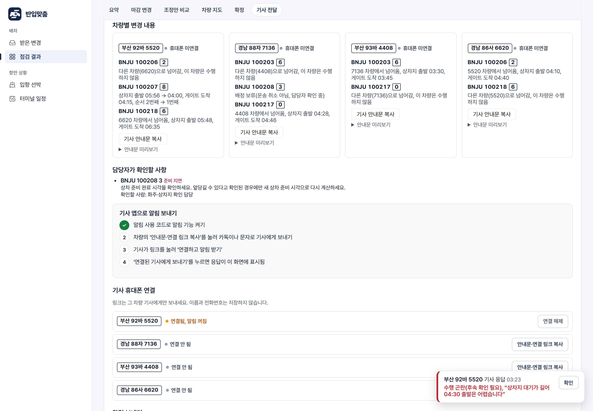
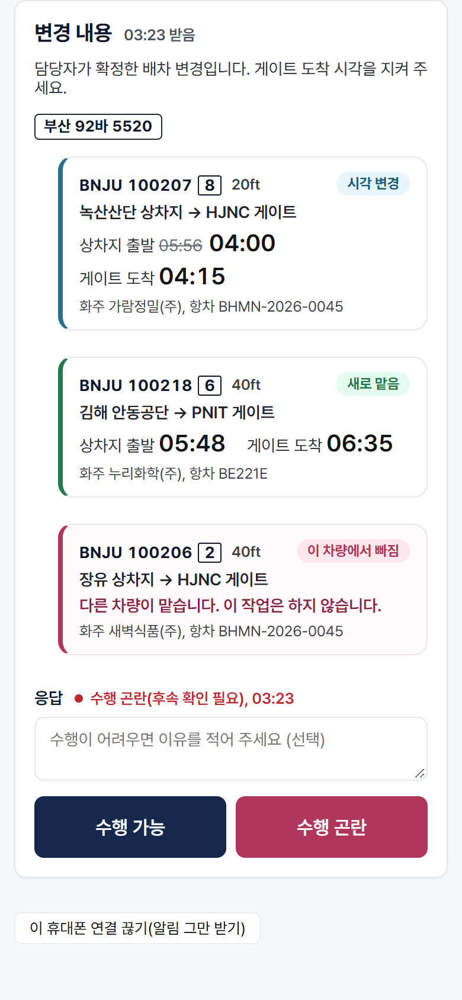
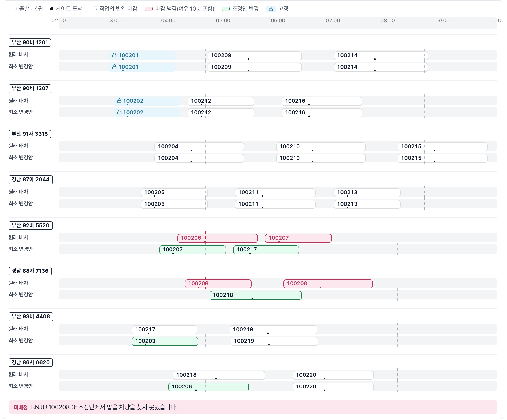
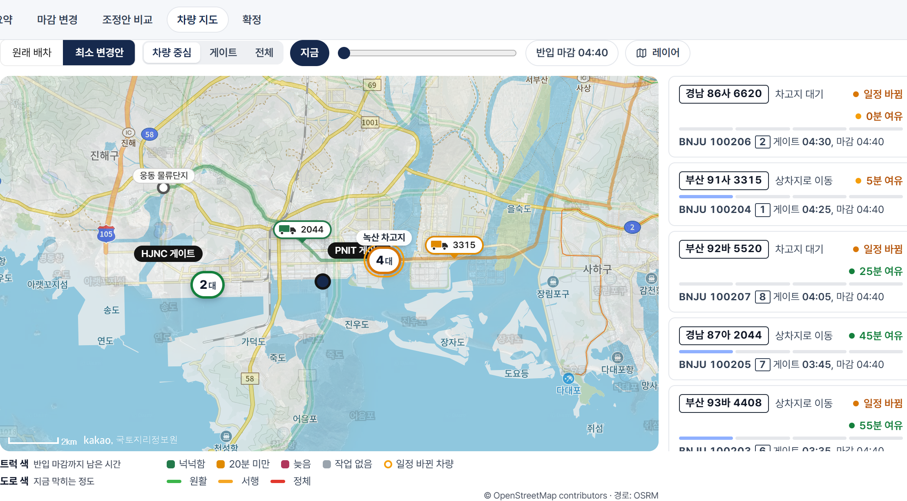
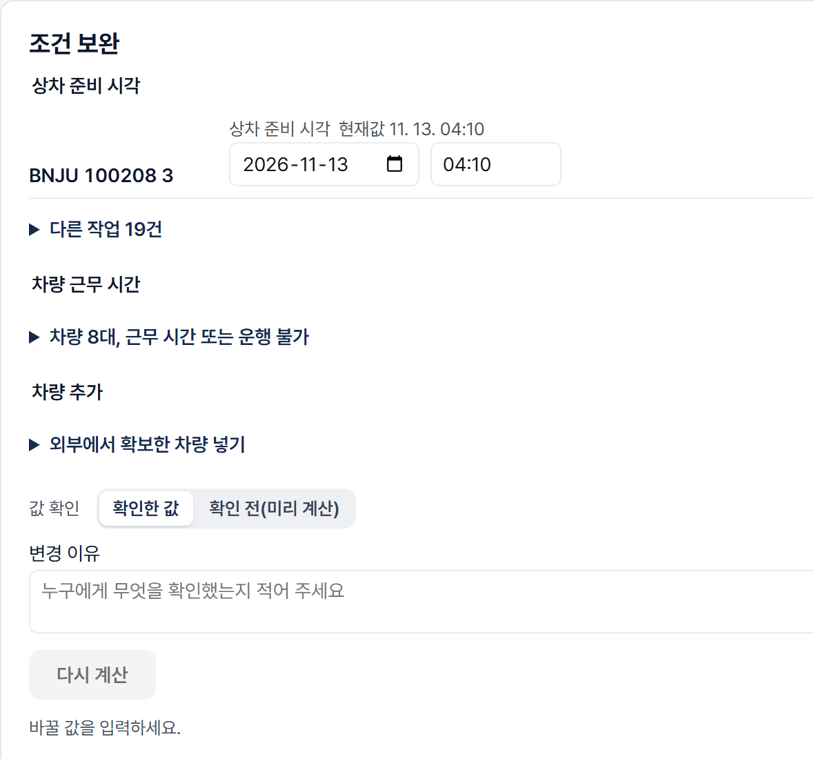
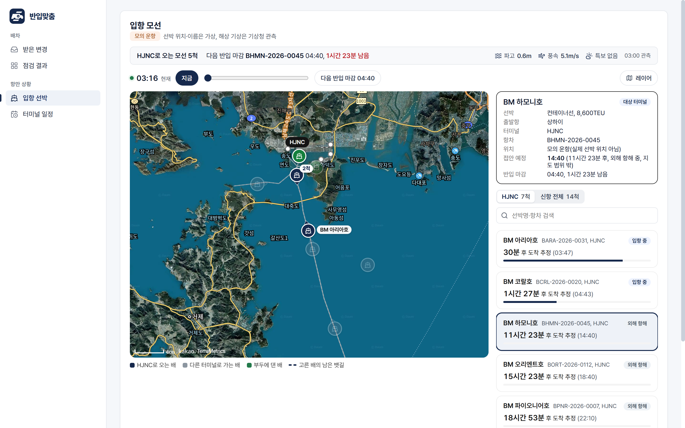

부산항 신항 수출 컨테이너 반입 마감 변경에
운송사 배차를 몇 분 안에 다시 맞추는 서비스
2nd LogisticSolver 2026 · 스마트물류 문제해결 경진대회 보고서
2026. 11. 13. 제출
터미널이 반입 마감(CCT)을 바꾸면, 운송사 배차 담당자는 남은 배차표를 손으로 다시 짜고 기사에게 전화·카톡으로 하나씩 알린다. 반입맞춤은 확정된 변경을 받는 즉시 마감을 넘길 컨테이너를 찾아내고, 이미 출발한 작업은 건드리지 않으면서 배차를 최소한만 바꾸는 조정안을 계산해 근거와 함께 보여 준다. 담당자가 확정하면 바뀐 차량의 기사에게만 알림을 보내고 수행 가능·곤란 응답을 받는다.
| 평가 항목(배점) | 이 보고서에서 답하는 내용 | 쪽 |
|---|---|---|
| 기획의 명확성 (20) | 반입 마감 변경이 운송사 배차에 미치는 문제, 대상 사용자, KPI 4개와 목표값 | 3–4 |
| 데이터 활용 계획 (20) | 공공·민간 API 5종의 합법적 이용 조건, 수집 → 처리 → 활용 흐름, 품질 규칙과 호출 한도 | 5–6 |
| 창의성 및 차별성 (25) | 최소 변경 재배차 알고리즘(사전식 다목적 CP-SAT), 확정·조건 보완·기사 확인으로 이어지는 운영 모델, 기존 서비스 비교 | 7–11 |
| 실현 가능성 (15) | 기술 스택과 실제 운영 서버, 실기기 검증, 테스트 847개, 일정·자원, 리스크와 대응 | 12–13 |
| 기대효과 (20) | 측정값과 추정값을 나눈 KPI 개선, 산출식과 가정, 확산 시나리오 | 14–15 |
수출 컨테이너는 선박이 접안하기 전 터미널이 정한 반입 허용 시간(반입 시작 ~ 반입 마감, Cargo Closing Time) 안에 게이트를 통과해야 선적된다. HJNC는 반입 마감을 접안 10시간 전으로 안내하고, 2026년 8월 3일 접안 모선부터 수출 Dry 컨테이너의 지연 반입에 별도 청구를 적용한다고 공지했다. 지연 반입이 야드 재조작과 운영 차질을 부르기 때문이다[1]. 반입 시작 기준도 장치율에 따라 바뀐 사례가 있다[2].
선박 일정이 당겨지거나 터미널 사정으로 마감이 바뀌면, 운송사의 남은 배차표는 그대로 둘 수 없다. 그런데 배차 담당자에게는 다음 질문에 바로 답할 도구가 없다.
변경 빈도·소요 시간을 다룬 공개 통계는 찾지 못했다. 자문 요청 5곳(교수 2, 부산항만공사, HJNC, 운송 플랫폼사)에 질의했으며 회신은 아직 없다.
| 구분 | 내용 |
|---|---|
| 주 사용자 | 운송사 배차 담당자(부산항 신항 HJNC·PNIT 수출 Dry 컨테이너 운송) |
| 보조 사용자 | 화물차 기사 — 확정된 자기 차량의 변경만 받고 수행 가능·곤란을 회신 |
| 입력 사건 | 터미널이 확정한 항차별 반입 시작·마감 변경. 선박 ETA 변동은 마감 변경으로 자동 간주하지 않는다(ETA ≠ CCT) |
| 결정 범위 | 운송사 내부의 남은 작업 배차(차량·순서·출발 시각). 선석 배정·터미널 예약·차량 모집은 범위 밖 |
평가표가 제시한 네 축(정확도·리드타임·비용·탄소)에 맞춰 KPI를 정하고, 시제품에서 측정할 수 있는 목표값을 세웠다.
| 축 | KPI | 해결 목표 | 측정 방법 |
|---|---|---|---|
| 정확도 | 마감 초과 반입 운행 수 (새 마감 이후 게이트 도착) | 살릴 수 있는 화물은 모두 마감 안으로, 못 살리는 화물은 출발 전에 원인과 함께 표시 | 원래 배차 대비 조정안의 마감 초과·미배정 건수(엔진 계산 + 별도 검사기) |
| 리드타임 | 변경 수신 → 조정안, 확정 → 기사 응답 소요 | 조정안 10초 이내, 기사 응답 수 분 이내 | 계산 시간 제한·실측, 실제 휴대폰 알림 왕복 시각(서버 기록) |
| 비용·혼선 | 바뀌는 작업 수와 연락해야 할 기사 수 | 같은 수의 화물을 살리면서 변경을 최소화 | 방법별(마감순·전체 재배치·최소 변경) 변경 작업·차량 수 비교 |
| 탄소 | 헛걸음 운행(마감 후 도착) 이동 시간 | 마감 후 도착 운행을 0건으로 | 마감 초과 운행의 상차지→게이트→복귀 이동 시간 합 |
시연 사례 BHMN(작업 20건·차량 8대, 반입 마감 2시간 30분 앞당김)으로 담당자의 일을 비교했다. 지금 방식의 소요 시간은 5.3절의 가정값이다.
| 단계 | 지금(수작업) | 반입맞춤 |
|---|---|---|
| 변경 인지 | 터미널·선사 공지를 직접 확인, 항차와 내 화물 대조 | 받은 변경 목록에 '조치 필요'로 표시, 영향 컨테이너 수 미리 표시 |
| 영향 파악 | 배차표 20건의 도착 시각을 하나씩 다시 계산(약 20분) | 원래 배차로 4개가 마감 초과임을 즉시 계산 |
| 조정 | 경험으로 차량·순서 교체, 놓친 충돌은 기사 출발 후에 발견 | 10초 안에 최소 변경안: 3개 해결·5건 변경, 불가 1개는 원인(준비 지연)과 할 일 제시 |
| 확정·통보 | 바뀔 수 있는 기사 8명에게 전화·카톡(약 24분) | 남는 위험을 체크해 확정 → 바뀐 4대에만 안내문·알림 |
| 응답 관리 | 통화·메시지에 흩어져 기록 없음 | 수행 가능·곤란과 이유가 표에 모이고 곤란은 즉시 알림 카드 |

| 자료 | 제공처·방식 | 사용하는 값 | 이용 조건·한도 | 구분 |
|---|---|---|---|---|
| 선석 배정 현황 | HJNC 공개 웹 조회(JSON) | 항차, 반입 시작·마감, 접안 예정 | 공개 조회. 서버가 1시간에 1번만 수집(하루 24회), 실패 시 직전 정상값 유지 | 실제 |
| 해상 관측·특보 | 기상청 API허브(개인 회원 인증키) | 파고·풍속(거제도 관측), 부산앞바다 특보 | 일 20,000회 한도 중 하루 96회(30분 간격, 0.5%) 사용. 키는 서버에만 저장 | 실제 |
| 지도·위성·실시간 교통 | 카카오 지도 JavaScript SDK | 지도·위성 사진, 도로 혼잡도 겹쳐 보기 | 일 300,000회 무료 한도, 허용 도메인 등록 | 실제 |
| 도로 경로 | OpenStreetMap + OSRM | 상차지→게이트 실제 도로 경로·거리 | ODbL 출처 표기. 경로는 미리 받아 저장(실시간 호출 없음) | 실제 |
| 기사 알림·위치 | 웹 푸시(VAPID), 브라우저 위치 API | 알림 전달·열람·응답, 기사가 켠 경우 위치 | 기사 동의 후에만. 위치는 최신 1건만 보관, 끄면 즉시 삭제 | 실제 |
| 배차표·차량·화물 | 모의 자료(팀 제작) | 작업 20건·차량 8대·준비 시각·이동 시간 | 실제 운송사 자료 미확보. 거리·시간은 OSRM 실측 경로로 맞춤 | 모의 |
추가 검토 후 채택하지 않은 자료: 한국도로공사 교통 API(부산 구간·단위·집계 품질 미확인), AISstream 선박 위치(부산 수신 시험 0건), openrouteservice(화물차 제약 미지원으로 표시 경로만 비교). 채택하지 않은 이유를 자료별로 기록했다(코드 ZIP docs/data/).
| 규칙 | 이유와 구현 |
|---|---|
| 선박 ETA ≠ 반입 마감 | 입항 지연이 곧 마감 변경은 아니다. 터미널이 재조정을 확정 공지했을 때만 계산한다. 확정 전 공지는 '확정 대기'로 영향만 보여 준다. |
| 모르는 값은 모른다고 | 상차 준비 시각·이동 시간이 비면 계산하지 않고 '입력 확인'으로 돌려 담당자가 채우게 한다. 0분·즉시 가용으로 가정하면 실현 불가능한 배차가 나온다. |
| 출처와 시각을 함께 | 모든 값에 제공처·수신 시각·확정 여부를 붙인다. 기상 관측은 HJNC 현장이 아닌 인근 지점(거제도)임을 표시한다. |
| 실제와 모의를 섞지 않음 | 외부 호출이 실패해도 모의값으로 몰래 바꾸지 않는다. 화면에 '기상청 응답 오류/연결 실패'처럼 원인을 구분해 보여 준다. |
| 호출 한도 안에서 운영 | 사용자가 아무리 많아도 외부 API는 서버 타이머만 호출한다(사용자 수와 무관한 고정 호출). 화면은 서버 사본을 5분마다 읽는다. |
실제 운송사 배차표는 영업 정보라 확보하지 못했다. 대신 현실의 거리·시간 구조를 지키는 모의 자료를 만들었다. 녹산 차고지·녹산산단·사상·웅동·김해 안동·장유 6곳의 상차지와 HJNC·PNIT 게이트 사이 이동 시간은 OSRM 실제 도로 경로로 맞췄다(예: 녹산산단→PNIT 18분, 김해 안동→PNIT 47분). 시연 공지 5종(마감 앞당김 2건, 늦춰짐, 확정 전, 준비 시각 누락)은 같은 배차표에서 사건만 바꿔 만들었다. 시연 시각은 화면을 연 '지금'에 맞춰 옮기되 마감은 10분 단위, 반입 시작은 접안 3일 전 00:00으로 정렬해 실제 공지와 같은 모양을 유지한다.

모든 계산 입력은 하나의 '스냅샷'으로 묶어 버전과 함께 저장한다. 같은 스냅샷이면 언제 다시 계산해도 같은 결과가 나오고, 확정할 때 입력이 바뀌지 않았는지 재검사한다.
| 묶음 | 주요 필드 | 출처·검증 |
|---|---|---|
| 작업(jobs) | 컨테이너 번호, 항차, 상차지·터미널·복귀지, 상차 준비 시각, 규격(20/40ft)·중량, 처리 시간, 출발 여부·고정 | 운송사 배차표(현재 모의). 준비 시각이 비면 계산 보류 |
| 차량(vehicles) | 번호판, 시작 위치, 가용 시작·근무 종료, 적재 가능 규격·최대 중량 | 운송사(모의). 가용 > 근무 종료면 거절 |
| 반입 허용 시간 | 항차·터미널별 반입 시작·마감, 확정 여부, 확인자·확인 시각 | HJNC 공개 일정 + 담당자 확정 |
| 변경(change) | 대상 항차, 이전·새 마감, 수신·확정 시각, 근거 | 터미널 공지. 확정 전이면 계산하지 않음 |
| 이동 시간 | 지점 쌍별 방향 이동 시간(분) | OSRM 도로 경로 기반. 빠진 쌍이 있으면 보류(0분 금지) |
| 정책(policy) | 게이트 여유 10분, 출발 시각 허용 폭 5분, 입력 유효 시간 3시간 | 팀 설정(운송사별 조정 가능) |
| 원래 배차 | 작업별 차량·순서·상차지 출발·게이트 도착·복귀 시각 | 변경 전 확정 배차. '변경 수'의 기준 |
공개 자료로 국내 컨테이너 운송·항만 서비스 7곳을 비교했다. 배차·지도·운송 추적·기사 앱 자체는 이미 있다. 우리는 그것을 새 기능이라고 주장하지 않는다. 차이는 '확정된 반입 마감 변경'이라는 사건에서 출발해, 기존 배차를 최대한 지키며 다시 맞추는 과정 전체에 있다.
| 비교 항목 | 일반 배차·TMS(공개 소개 기준) | 반입맞춤 |
|---|---|---|
| 출발점 | 새 오더 → 배차 | 확정된 마감 변경 → 남은 배차 영향 점검 |
| 재배차 기준 | 공개 자료에서 확인 안 됨 | 마감 초과 최소 → 변경 최소의 사전식 최적화, 출발 작업 보호 |
| 못 살리는 화물 | 공개 자료에서 확인 안 됨 | 원인(준비 지연·차량 부족·마감 초과)과 담당자가 할 일을 함께 제시 |
| 판단 근거 | — | 원래 배차와 조정안을 지표·시간표·지도로 나란히 비교, 다른 계산안도 열람 |
| 현장 조건 반영 | — | 준비 시각 확인, 차량 추가, 오늘 운행 불가 입력 → 즉시 재계산, 전후 비교 |
| 기사 통보 | 전화·문자 또는 자체 앱 | 바뀐 차량에만 안내문+연결 링크 1회 복사, 앱 설치 없이 알림·응답 |
비교 대상: TIGER FACE, CONTAINUS TMS, PortQM, PortWise 등 공식 소개·앱 배포 페이지(2026-11-07 확인). 로그인 후 기능은 시험하지 않았으므로 공개 소개에 없는 기능을 '미지원'으로 단정하지 않았다.
같은 입력·같은 계산 시간으로 네 가지 방법을 계산해 담당자가 비교하게 했다.
| 방법 | 기법 | 목적(우선순위 순) |
|---|---|---|
| B0 원래 배차 | 진단 | 바꾸지 않았을 때 늦는 화물·위험을 계산(기준선) |
| B1 마감순 재배치 | 마감 빠른 순 삽입 휴리스틱 | 현장에서 손으로 하는 방식을 흉내 낸 비교 기준 |
| B2 전체 재배치 | CP-SAT 사전식 최적화 | ① 미배정(마감 안에 못 넣는 화물) ② 이동 시간 |
| B3 최소 변경안 | CP-SAT 사전식 최적화 | ① 미배정 ② 변경 작업 수 ③ 이동 시간 → 동률이면 원래 출발 시각에 가장 가깝게 |
차량이 바뀐 작업, 허용 폭(5분)을 넘어 출발 시각이 바뀐 작업, 순서가 뒤바뀐 작업, 새로 배정된 작업의 합집합. 5분 이내 출발 조정은 기사에게 보내지 않는다(통보 피로 방지).
OR-Tools CP-SAT 9.15, 방법당 10초 제한. 각 목적 단계의 최적성 증명 여부를 결과에 기록하고, 시간 안에 증명하지 못하면 '최적 미증명'으로 표시한다. 결과는 엔진과 별도로 만든 독립 일정 검사기가 다시 검사한 뒤에만 확정할 수 있다.

터미널 공지가 '예정'이면 배차를 바꾸지 않고 영향만 미리 보여 준다. 담당자가 확정하기 전의 계산안은 기사에게 보이지 않는다. 기사는 확정된 자기 차량의 변경만 본다 — 확정되지 않은 정보로 기사가 움직이는 혼선을 막는다.
화주가 준비 시각을 당겨 주거나, 협력사 차량을 구했거나, 차량이 고장 나면 그 조건만 바꿔 같은 방법·같은 시간으로 다시 계산한다. 원래 입력과 이전 결과는 그대로 남고 전후 비교가 붙는다. 화주 확인 전이면 '확인 전(미리 계산)'으로 결과만 보고 확정은 막는다.


담당자가 계산 결과를 믿고 확정할 수 있도록, 모든 제안에 시간표·지도·입력 근거를 붙였다. 아래는 시연 BHMN(반입 마감 07:10 → 04:40)의 원래 배차와 최소 변경안이다.

| 담당자의 질문 | 화면에서 보는 근거 |
|---|---|
| 정말 늦나, 왜 늦나 | 작업별 새 마감 대비 게이트 도착 시각과 원인(준비 지연·차량 부족·마감 초과), 근거 공지와 확정 시각 |
| 왜 이 안인가 | 마감순·전체 재배치·최소 변경안을 같은 입력·같은 계산 시간으로 나란히 — 미배정, 바뀌는 작업, 연락할 기사, 이동 시간 |
| 무엇이 바뀌나 | 차량별 시간 막대(그림 6)와 작업별 표, 차량 지도(원래 배차·최소 변경안 전환) |
| 현장 사정이 다르면 | 조건 보완(그림 8)으로 그 값만 바꿔 다시 계산, 이전 결과와 전후 비교 |
| 확정해도 되나 | 남는 위험(미배정·출발 차량 위험)을 담당자가 하나씩 체크해야 확정 버튼이 열림, 확정 직전 입력 버전 재검사 |



시제품을 로컬 시연에 그치지 않고 인터넷에 운영 서버로 배포했다. 심사위원이 직접 https://banipmatch.duckdns.org에서 계산·확정·기사 알림까지 해 볼 수 있다.
| 계층 | 기술 | 운영 방식 |
|---|---|---|
| 서버 | AWS Lightsail 서울 리전(메모리 2GB, 디스크 60GB) | systemd로 서비스 자동 시작·재시작, 스왑 1GB |
| 보안 통신 | Caddy + Let's Encrypt HTTPS | 인증서 자동 발급·갱신(웹 푸시와 위치 API는 HTTPS 필수) |
| 백엔드 | Python 3.12, FastAPI, OR-Tools CP-SAT | 계산 대기열(최대 30건), 사용자별 요청 제한(분당 180/쓰기 40) |
| 저장 | 사용자 작업공간별 SQLite | 방문자마다 분리된 DB, 24시간 보관 후 자동 정리 |
| 프론트엔드 | React + TypeScript + Vite | 담당자 PC 화면, 기사용 모바일 화면(PWA, 홈 화면 추가) |
| 알림 | Web Push(VAPID) + Service Worker | 알림 사용 코드로 허가된 작업공간만 실제 발송 |
| 자료 수집 | systemd 타이머 2개 | HJNC 매시, 기상청 30분, 실패 시 직전 값 유지 |
왼쪽 메뉴의 입항 선박·터미널 일정에서는 서버가 수집한 HJNC 일정과 기상청 관측을 볼 수 있다.
| 확인 항목 | 결과(2026-11-13, 운영 서버) |
|---|---|
| 기사 연결 → 알림 수신 → 응답 | 안드로이드 휴대폰에서 받은 연결 링크 → 연결 → 알림 수신 → 열람 → 응답. 전달 02:52:30, 열람 02:52:45, 응답 02:53:45(서버 기록) |
| 담당자 화면 반영 | 응답·메모가 표와 알림 카드에 5초 안에 반영 |
| 기사 위치 공유 | 기사가 켜자 담당자 지도에 실제 위치(창원)가 표시, 끄자 삭제 |
| 자동 시험 | 서버 667개, 화면 180개 — 총 847개 통과, GitHub에서 모든 PR마다 자동 실행 |
| 계산 무작위 검사 | 입력을 무작위로 바꾼 24회 계산 모두 다른 결과, 별도 검사기 규칙 위반 0건(5.2절) |
아이폰(홈 화면 앱) 실기기 수신은 아직 확인하지 못해 팀원 시험으로 남겨 두었다.
| 기간 | 수행 |
|---|---|
| ~11/06 | 현장 문제 조사·주제 선정, 자문 요청 5곳 |
| 11/07–08 | 설계 v6, 공통 규격, 엔진 B0–B3, 80회 평가 |
| 11/09–10 | 실제 API 검증(HJNC·기상청·도로·AIS), 화면 |
| 11/11 | 통합, HTTPS 시험 서버, 웹 푸시 |
| 11/12–13 | 운영 서버 배포, 실기기 검증, 보고서 |
| 11/14–20 | 팀원 실기기 시험(아이폰 포함), 발표자료(11/20 제출) |
| 역할 | 담당 |
|---|---|
| 최적화·통합·배포 | 황대겸 |
| 서버 API·DB·알림 | 안선효 |
| 화면·사용성 | 최길웅 |
| 데이터 검증·모의 자료 | 심민준 |
GitHub 저장소에서 커밋 270여 개, 병합된 PR 67개. 모든 변경은 PR과 자동 시험을 거쳐 반영했다. 운영 비용은 소형 클라우드 서버 1대와 무료 한도 안의 API로, 별도 유료 계약이 없다.
| 리스크 | 대응(구현됨) |
|---|---|
| 외부 API 장애·한도 초과 | 서버 타이머만 호출(사용자 수와 무관), 한도의 0.5% 사용, 실패 시 직전 값 유지하고 원인 표시 |
| 계산이 시간 안에 안 끝남 | 10초 제한, 찾은 해 중 가장 좋은 안 + '최적 미증명' 표시, 증명되지 않아도 독립 검사 통과 시에만 확정 |
| 잘못된 입력으로 엉뚱한 배차 | 빈 값·미확정 공지·미래 근거는 계산 전 차단, 조건 수정은 이유 필수·원본 보존 |
| 오래된 결과로 확정 | 확정 시 입력·계획 버전 재검사, 이미 바뀌었으면 거절 |
| 동시 사용·남용 | 방문자별 작업공간 분리, 요청 제한·대기열, 작업공간 한도 도달 시 자동 정리 후 이어서 진행 |
| 개인정보·보안 | 기사 이름·전화번호 미수집, 초대 링크 1회·30분·기기 1대, 위치는 동의 후 최신 1건만, API 키는 서버 비밀 파일에만 저장 |
| 현장 자료 부족 | 모의 자료와 실제 자료를 화면·보고서에서 구분, 현장 자문 회신 시 비식별 배차로 재검증 예정 |
같은 입력·같은 10초 제한으로 네 방법을 계산했다(재현: tools/report_demo_scenarios.py, 결과 docs/experiments/demo-scenarios-2026-11-13/).
| 공지 | 원래 배차 마감 초과 | 최소 변경안 마감 초과·미배정 | 바뀌는 작업 마감순 / 전체 / 최소 | 연락할 기사 마감순 / 전체 / 최소 |
|---|---|---|---|---|
| BHMN 마감 2시간 30분 앞당김 | 4 | 0 · 1(준비 지연) | 16 / 11 / 5 | 8 / 7 / 4 |
| BE221E 마감 1시간 30분 앞당김 | 1 | 0 · 0 | 16 / 16 / 2 | 8 / 8 / 2 |
| BPNR 마감 1시간 늦춰짐 | 0 | 0 · 0 | 17 / 5 / 0 | 8 / 3 / 0 |
| BORT 앞당김 예정(확정 전) | 계산하지 않음 — 확정되면 이 항차 5개 모두 기존 배차로 마감 안에 들어감을 미리 안내 | |||
| 상차 준비 시각 미입력 | 계산 보류 — 비어 있는 값을 담당자가 채우면 즉시 재계산(0분 가정 금지) | |||
BHMN에서 원래 배차는 4개가 새 마감 이후 게이트에 도착한다. 최소 변경안은 3개를 마감 안으로 옮기고, 준비가 늦어 어떤 차량으로도 불가능한 1개(상차 준비 시각 + 운송 40분 + 여유 10분이 새 마감보다 20분 늦음)는 출발 전에 원인과 함께 알린다. 마감 후 도착 운행은 4건 → 0건.
살리는 화물 수는 세 방법이 같다. 그런데 마감순 재배치는 16건을, 최소 변경안은 BHMN 5건·BE221E 2건만 바꾼다. 연락할 기사는 8명 → 2~4명. 마감이 늦춰진 BPNR에서는 바꿀 필요가 없다는 것까지 계산해 0건(마감순은 17건을 흔든다).
| 실험 | 설계 | 결과 |
|---|---|---|
| 동결 평가 80회 (2026-11-08, 엔진 0.2.3) | 합성 입력 10개(8건 사례 8 + 20건·50건) × 솔버 시드 2 × B0~B3. 입력·시드·소스 해시를 계산 전에 고정 | 처리 작업이 같은 작은 사례 12쌍에서 B3는 B2보다 변경 4~7건 감소, 대신 이동 12~82분 증가 — '변경 부담 ↔ 이동 부담'의 절충을 확인. 50건 사례는 10초 안에 차이·최적성을 확인하지 못함 |
| 무작위 견고성 24회 (2026-11-13, 엔진 0.2.4) | 시연 입력의 준비 시각·마감·운행 불가 차량을 무작위로 바꾼 12개 × B1·B3 | 24개 결과가 모두 다름(고정값 아님), 엔진과 별도 검사기에서 표시되지 않은 규칙 위반 0건, B3 전부 최적 증명 |
| 계산 시간 | 작업 20건·차량 8대 | B3 전 목적 단계 최적 증명이 10초 제한 안에서 완료(계산한 시연 3종 모두 OPTIMAL) |
| 80회 평가 대표 사례(시드 0) | 미배정 B2/B3 | 변경 B2 → B3 | 이동(분) B2 → B3 | 처리 작업 |
|---|---|---|---|---|
| 마감 단축 8건 | 0 / 0 | 8 → 4 | 342 → 376 | 동일 |
| 시작 지연 8건 | 0 / 0 | 8 → 3 | 342 → 410 | 동일 |
| 준비 지연 8건 | 1 / 1 | 7 → 0 | 287 → 369 | 동일 |
| 고정 위험 8건 | 1 / 1 | 5 → 2 | 239 → 254 | 다름 |
| 마감 단축 20건 | 4 / 4 | 16 → 5 | 761 → 809 | 다름 |
| 마감 단축 50건 | 9 / 9 | 41 → 41 | 1860 → 1860 | 동일 |
위 실험은 같은 팀이 만든 모의 입력이며 서로 다른 현장 표본이 아니다. 50건 규모의 최적성은 증명하지 못했으므로 대규모 운송사에는 시간 제한·분할 계산이 추가로 필요하다.
아래는 5.1의 측정값에 밝힌 가정을 곱한 추정이다. 가정을 바꾸면 결과가 비례해 바뀐다.
| KPI | 산출식(근거) | 가정 | 추정(변경 1건당) |
|---|---|---|---|
| 리드타임: 재배차 판단 | 수작업 재검토 시간 − 서비스 사용 시간 | 수작업: 작업 20건 확인 1분/건 = 20분 서비스: 계산 10초 + 검토 3분 | 약 17분 단축 |
| 리드타임: 기사 통보·확인 | (연락할 기사 수 × 통화·확인 시간) 비교 | 통화·확인 3분/명, 마감순 8명 vs 최소 변경 4명(BHMN) | 24분 → 알림 1회 + 응답 대기(실측 75초), 연락 대상 절반 |
| 정확도: 마감 준수 | 원래 배차 마감 초과 − 조정안 마감 초과 | 측정값(BHMN) | 지연 반입 4건 → 0건, 불가 1건은 출발 전 통보 |
| 탄소: 헛걸음 운행 | 마감 초과 운행의 상차지→게이트→복귀 이동 시간 × 평균 속도 × 연비 × 배출계수 | 이동 172분(측정), 40km/h, 대형 트랙터 3km/L, 경유 2.6kg CO₂/L | 약 115km·CO₂ 약 100kg 회피(해당 운행이 반입 거절·재운행될 경우) |
| 단계 | 내용 | 필요한 것 |
|---|---|---|
| 1. 시범 | 운송사 1곳, HJNC 항차, 배차 담당자 1~2명이 실제 변경 때 병행 사용 | 비식별 배차표 내보내기(엑셀/CSV), 기사 동의 |
| 2. 검증 | 실제 변경 사례로 KPI(마감 초과·변경 수·통보 시간) 측정, 가정값 교체 | 4주간 변경 기록, 담당자 인터뷰 |
| 3. 연동 | TMS 배차표 자동 수신, 신항 다른 터미널 반입 일정 연결 | TMS·터미널 데이터 이용 허가 |
| 4. 확산 | 운송사별 작업공간·권한 관리, 차량 GPS 연동 | 운영 인증, 보안 점검, 위치정보사업 신고 검토 |
| 한계 | 다음 단계 |
|---|---|
| 실제 운송사 배차·기사 자료 없음 | 자문처·운송사에 비식별 배차표 협조 요청 → 같은 엔진으로 실제 변경 사례 재검증 |
| 변경 빈도·업무 시간 통계 없음 | 배차 담당자 인터뷰로 5.3절 가정(재검토 1분/건, 통화 3분/명) 교체 |
| 50건 이상 규모의 최적성 미증명 | 항차·터미널 단위 분할, 시간 제한 상향, 초기해 개선 |
| 아이폰 알림 실기기 미확인 | 팀원 실기기 시험(11월 중), 홈 화면 앱 안내 개선 |
| 휴대폰 위치는 화면이 열린 동안만 | 차량 GPS·운행기록계 연동(운송사 계약 필요) |
| 터미널 예약·선반입 등 외부 절차 미연동 | 현재는 담당자가 할 일로 안내. 터미널 예약 시스템 연동은 권한 확보 후 검토 |
| 파일 | 내용 |
|---|---|
| 반입맞춤_문제해결_보고서.pdf | 이 보고서 |
| 반입맞춤_코드_데이터.zip | 전체 소스(백엔드·엔진·화면), 배포 설정, 모의 데이터·스키마, 실제 API 검증 기록, 실험 입력·결과 원자료, 조사 자료, 시험 코드, 파일별 해시 목록. 비밀 키·개인정보는 제외 |
재현: ZIP의 docs/submission/README.md 순서대로 Python 3.12·Node 24에서 pytest(서버 시험), npm test(화면 시험), python tools/report_demo_scenarios.py(5.1 표), python tools/check_engine_robustness.py(5.2 견고성)를 실행하면 보고서 수치를 다시 얻을 수 있다. 운영 서비스는 https://banipmatch.duckdns.org에서 바로 확인할 수 있다.